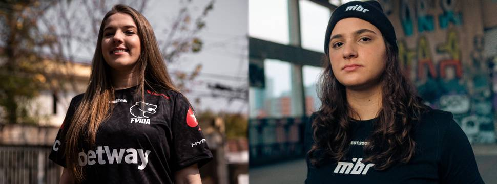

A ESL Impact Valencia 2022 de Counter-Strike:Global Offensive (CS:GO) vai começar pegando fogo para o Brasil. Isso porque as duas equipes brasileiras na competição, FURIA e MIBR, vão estrear o torneio se enfrentando. A informação foi revelada nesta segunda-feira (20).
O clássico brasileiro em pleno Mundial feminino será o jogo de abertura do Grupo B, que também conta com GODSENT e CLG Red. A divisão das oito equipes participantes no torneio ficou da seguinte maneira:
Os primeiros confrontos do campeonato serão disputados em melhores de um (MD1), enquanto todo o resto será MD3. Sabendo disso, as partidas de abertura ficaram marcadas assim:
Ainda no mesmo dia, às 13h50, o time brasileiro vencedor volta a jogar, valendo vaga nos playoffs. Por outro lado, a equipe perdedora joga apenas no dia seguinte, às 6h, valendo permanência na primeira etapa do mundial feminino.
A ESL Impact Valencia 2022 de CS:GO acontece entre 1 e 3 de julho, em Valência, na Espanha. O prêmio total em jogo é de US$ 100 mil - aproximadamente R$ 515,3 mil.